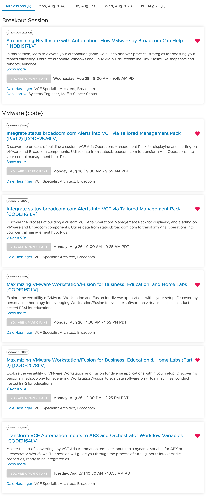

VMware Explore 2024 | My Sessions

I am presenting (4) sessions at VMware Explore 2024.
"Technology can amplify your message, but the real power of a presentation lies in the connection you make with your audience. Remember, it's not the slides or the software that will leave a lasting impact—it's your passion and the story you tell." - ChatGPT
My VMware Explore 2024 Sessions
When and Where:
Website: VMware Explore 2024.
Las Vegas Date: August 26 – 29, 2024
The Venetian Convention and Expo Center
Updated: 07/22/2024
I'm thrilled to announce that I will be presenting four sessions at VMware Explore 2024! Note that two of the VMware {code} sessions have been combined into consecutive presentations, ensuring that all material is covered in these updated sessions. My journey to this moment began at the Mid-Atlantic HVC (Healthcare Virtualization Community) events. I initially attended these events as a VMware customer eager to learn. Eventually, I was invited to present on the automation work I was doing with VMware Products. Though nerve-wracking, my first presentation was a success, and the positive feedback encouraged me to start my blog, sharing knowledge with the vCommunity.
After countless blog posts and community events, I'm now honored to present a General Session at VMware Explore 2024. For those in the VMware community, this is the pinnacle of recognition and opportunity. I'm excited to bring my passion for VMware products to these sessions, and I invite you to sign up and join me. I'll do my best to share valuable insights and help you enhance your environments. Check out the links to my sessions below and in the VMware Explore 2024 Content Catalog. Hope to see you in Vegas!
Sessions:
- Streamlining Healthcare with Automation: How VMware Can Help | INDB1917LV
- In this session, learn to elevate your automation game. Join us to discover practical strategies for boosting your team's efficiency. 1) Automate Windows and Linux VM builds 2) Streamline Day 2 tasks like snapshots and reboots 3) Enhance security incident management by configuring Aria Operations for Logs to alert on log analysis, and 4) Automate snapshot deletion and power operations using Aria Operations Automation Central.
- I'm excited to announce that Don Horrox, Systems Engineer, will be co-presenting with me in this session. I met Don when he was a VMware customer that I worked with and was immediately impressed by his passion for VMware products. Together, we have prepared some great content to share with everyone on their automation journey. Check out Don's blog, vChamp, to see what he has been sharing with the vCommunity.
- Transform VCF Automation Inputs to ABX and Orchestrator Workflow Variables | CODE1164LV
- Master the art of converting any VCF Aria Automation template input into a dynamic variable for ABX or Orchestrator Workflows. This session will guide you through the process of turning inputs into versatile properties, ready to be integrated as parameters for any script. Unlock the potential to automate virtually any task within your infrastructure. By the end of this session, you'll realize that your creativity in variable use is the most powerful automation tool at your disposal.
- After attending this session, you'll be inspired to automate everything in your environment. Discover how easy it is to automate any task. Your thought process will become the most powerful automation tool you'll have after this session.
- Maximizing VMware Workstation/Fusion for Business, Education, and Home Labs | CODE1162LV
- Explore the versatility of VMware Workstation and Fusion for diverse applications within your setup. Discover my personal methodology for leveraging Workstation/Fusion to evaluate software on virtual machines, conduct nested ESXi for educational purposes, or operate Linux VMs on Windows or Mac laptops. Delve into the included Workstation/Fusion APIs as a resource for automation education. I'll demo PowerShell Functions I developed, using the APIs, for efficient VM management on Workstation/Fusion.
- My goal with this session is to assist everyone from beginners in virtualization to those looking to enhance their daily automation tasks. You'll learn how to set up a powerful home lab and leverage APIs to advance your coding skills.
- Integrate status.broadcom.com Alerts into VCF via Tailored Management Pack CODE1161LV
- Discover the process of building a custom VCF Aria Operations Management Pack for displaying and alerting on VMware and Broadcom components. Utilize data from status.broadcom.com to transform Aria Operations into your central management hub. Plus, gain insights into both upcoming and past Notices for the tracked services. The session will feature demonstrations of customized Dashboards, Views, and Alert configurations.
- I'll walk you through creating a VMware Aria Management Pack using the MP Builder tool. By following along with the example, you'll be able to recreate the same Management Pack and use it in your own environment.
Link to all my sessions in the VMware Explore 2024 Content Catalog
Session Details:

Links to resources discussed is this Blog Post:
- VMware Explore 2024.
- VMware Explore 2024 | Registration Link.
- If you found this blog article helpful and it assisted you, consider buying me a coffee to kickstart my day.